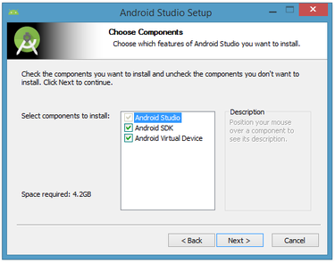
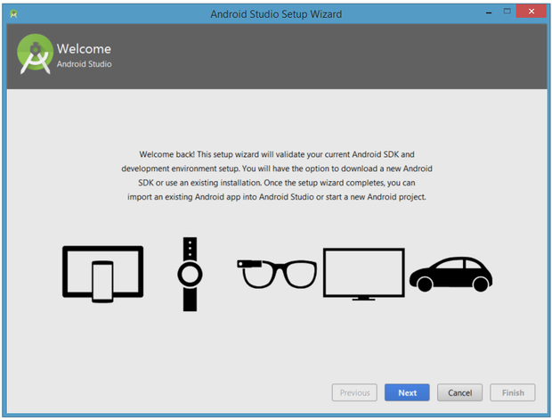
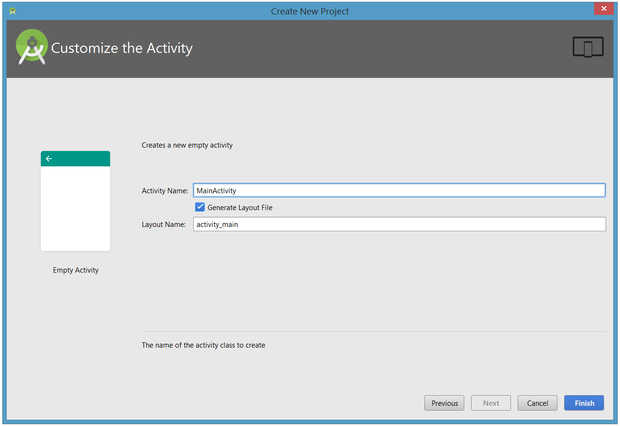
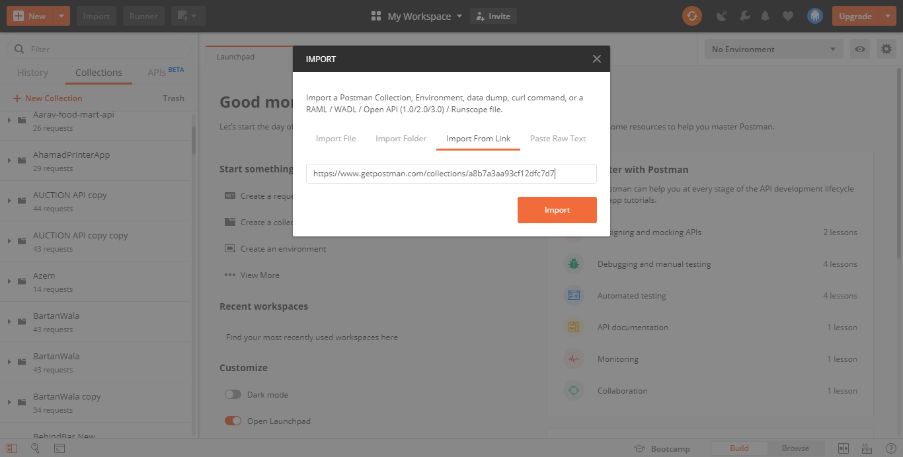

Get Started
Thanks for purchasing PetStand
Please read the documentation carefully, and if you have any questions, please feel free to contact us.
Created: 26/11/2019
By: Samyotech Lab's
Samyotech@gmail.com
This app is for pet lovers. This app let's user to share their pet's information with other pet lovers. Also helps to find nearby pets and veterinary in Google Maps. This application have unique UI, reminder, public wall and also you can share on other social media, save memories and many more. It is not Just a activity tracker for pet it is more than that.
- Unique UI
- Find Near By Veterinary
- Reminder
- Public Wall
- Share on Other Social Media
- Save Memories
- Activity Tracker For pet
If you like PetStand...
Please Don’t Forget to Rate it!
Features
- PetStand is the platform which provides services for pets and for pet's Lovers.
- This app have unique UI Based On Materialize by Google.
- In this app user can find near by veterinary.
- You can set reminder for your pet it can be categorized
- This app provides public wall in which user can join community also.
- User can daily enter the moves so you can find relevant information in app.
- User can Share their pet information on other social media through this app.
- You can upload images of good memories of app and can view anytime.
- This app provides you a platform for the show of User's pet and also provide Public Wall in this app. From this app user can contact with another pet holder.
Installation
System Requirement for Android Studio
Google provides Android Studio for the Windows, Mac OS X, and Linux platforms. You can download this software from the Android Studio homepage. (You'll also find the traditional SDKs, with Android Studio's command-line tools, available from the Downloads page.) Before downloading Android Studio, make sure your platform meets one of the following requirements:
Windows OS
Microsoft Windows 7/8/10 (32-bit or 64-bit) • 2 GB RAM minimum, 8 GB RAM recommended • 2 GB of available disk space minimum, 4 GB Recommended (500 MB for IDE + 1.5 GB for Android SDK and emulator system image) • 1280 x 800 minimum screen resolution • JDK 8 For accelerated emulator: 64-bit operating system and Intel processor with support for Intel VT-x, Intel EM64T (Intel 64), and Execute Disable (XD) Bit functionalit
Mac OS
• Mac OS X 10.8.5 or higher, up to 10.11.4 (El Capitan) • 2 GB RAM minimum, 8 GB RAM recommended • 2 GB of available disk space minimum, 4 GB Recommended (500 MB for IDE + 1.5 GB for Android SDK and emulator system image) • 1280 x 800 minimum screen resolution • JDK 6
Linux OS
• GNOME or KDE desktop: Tested on Ubuntu 12.04, Precise Pangolin (64-bit distribution capable of running 32-bit applications) • 64-bit distribution capable of running 32-bit applications • GNU C Library (glibc) 2.11 or later • 2 GB RAM minimum, 8 GB RAM recommended • 2 GB of available disk space minimum, 4 GB Recommended (500 MB for IDE + 1.5 GB for Android SDK and emulator system image) • 1280 x 800 minimum screen resolution • JDK 8 For accelerated emulator: Intel processor with support for Intel VT-x, Intel EM64T (Intel 64), and Execute Disable (XD) Bit functionality, or AMD processor with support for AMD Virtualization (AMD-V)
1) Android Studio on Windows
To install Android Studio on Windows, proceed as follows:
I launched android-studio-bundle-143.2821654-windows.exe to start the installation process. The installer responded by presenting the Android Studio Setup dialog box shown in Figure 1.
Figure 2. Do you want to install the Android SDK and AVD?
The next dialog box invites you to change the installation locations for Android Studio and the Android SDK.

Figure 3. Accept the license agreement to continue installation
The next dialog box invites you to change the installation locations for Android Studio and the Android SDK.

Figure 4. Set the Android Studio and Android SDK installation locations
Change the location or accept the default locations and click Next. The installer defaults to creating a shortcut for launching this program, or you can choose to decline. I recommend that you create the shortcut, then click the Install button to begin installation.

Figure 5. Create a new shortcut for Android Studio
The resulting dialog box shows the progress of installing Android Studio and the Android SDK. Clicking the Show Details button will let you view detailed information about the installation progress.The dialog box will inform you when installation has finished. When you click Next, you should see the following:

Figure 6. Leave the Start Android Studio check box checked to run this software
To complete your installation, leave the Start Android Studio box checked and click Finish.
Running Android Studio
Android Studio presents a splash screen when it starts running:

Figure 7. Android Studio's start screen
On your first run, you'll be asked to respond to several configuration-oriented dialog boxes. The first dialog box focuses on importing settings from any previously installed version of Android Studio.

Figure 8. Import settings
If you're like me, and don't have a previously installed version, you can just keep the default setting and click OK. Android Studio will respond with a slightly enhanced version of the splash screen, followed by the Android Studio Setup Wizard dialog box:
Figure 9. Validate your Android SDK and development environment setup
When you click Next, the setup wizard invites you to select an installation type for your SDK components. For now I recommend you keep the default standard setting.

Figure 10. Choose an installation type
Click Next and verify your settings, then click Finish to continue.
Figure 11. Review settings
The wizard will download and unzip various components. Click Show Details if you want to see more information about the archives being downloaded and their contents.
Figure 12. Review settings
If your computer isn't Intel based, you might get an unpleasant surprise after the components have completely downloaded and unzipped:
Figure 13. Intel-based hardware acceleration is unavailable
Your options are to either put up with the slow emulator or use an Android device to speed up development. I'll discuss the latter option later in the tutorial.Finally, click Finish to complete the wizard. You should see the Welcome to Android Studio dialog box:
Figure 14. Welcome to Android Studio
2) Android Studio on Mac
1.Launch the Android-studio-ide-162.4069837-mac.dmg file.
2.Drag and drop Android Studio into the Applications folder, then launch Android Studio.
3.Select whether you want to import previous Android Studio settings, then click OK.
4.The Android Studio Setup Wizard guides you though the rest of the setup, which includes downloading Android SDK components that are required for development.
Running Android Studio
Android Studio presents a splash screen when it starts running:
Figure 2. Android Studio's start screen
On your first run, you'll be asked to respond to several configuration-oriented dialog boxes. The first dialog box focuses on importing settings from any previously installed version of Android Studio.
Figure 3. Import settings
If you're like me, and don't have a previously installed version, you can just keep the default setting and click OK. Android Studio will respond with a slightly enhanced version of the splash screen, followed by the Android Studio Setup Wizard dialog box:
Figure 4. Validate your Android SDK and development environment setup
When you click Next, the setup wizard invites you to select an installation type for your SDK components. For now I recommend you keep the default standard setting.
Figure 5. Choose an installation type
Click Next and verify your settings, then click Finish to continue.
Figure 6. Review settings
The wizard will download and unzip various components. Click Show Details if you want to see more information about the archives being downloaded and their contents.
Figure 7. Review settings
If your computer isn't Intel based, you might get an unpleasant surprise after the components have completely downloaded and unzipped:
Figure 8. Intel-based hardware acceleration is unavailable
Your options are to either put up with the slow emulator or use an Android device to speed up development. I'll discuss the latter option later in the tutorial.Finally, click Finish to complete the wizard. You should see the Welcome to Android Studio dialog box:
Figure 9. Welcome to Android Studio
3) Android Studio on Linux
To install Android Studio on Ubuntu, proceed as follows:
1. Open terminal in Ubuntu.
2. Run below commands One by One
2.1-sudo add-apt-repository ppa:webupd8team/java
2.2-sudo apt-get update
2.3-sudo apt-get install oracle-java-installer
2.4-sudo apt-get install oracle-java8-set-default
2.5-sudo add-apt-repository ppa:paolorotolo/android-studio
2.6-sudo apt-get update
2.7-sudo apt-get install android-studio
If you're like me, and don't have a previously installed version, you can just keep the default setting and click OK. Android Studio will respond with a slightly enhanced version of the splash screen, followed by the Android Studio Setup Wizard dialog box:
Figure 1. Validate your Android SDK and development environment setup
When you click Next, the setup wizard invites you to select an installation type for your SDK components. For now I recommend you keep the default standard setting.
Figure 2. Choose an installation type
Click Next and verify your settings, then click Finish to continue.
Figure 3. Review settings
The wizard will download and unzip various components. Click Show Details if you want to see more information about the archives being downloaded and their contents.
Figure 4. Review settings
If your computer isn't Intel based, you might get an unpleasant surprise after the components have completely downloaded and unzipped:
Figure 5. Intel-based hardware acceleration is unavailable
Your options are to either put up with the slow emulator or use an Android device to speed up development. I'll discuss the latter option later in the tutorial.Finally, click Finish to complete the wizard. You should see the Welcome to Android Studio dialog box:
Figure 6. Welcome to Android Studio
You'll use this dialog to start up a new Android Studio project, work with an existing project, and more. You can access it anytime by double-clicking the Android Studio shortcut on your desktop.
Your first Android Studio mobile app
The quickest way to get to know Android Studio is to use it to develop an app. We'll start with a variation on the "Hello, World" application: a little mobile app that displays a "Welcome to Android" message. In the steps that follow, you'll start a new Android Studio project and get to know the project workspace, including the project editor that you'll use to code the app in Part 2.
Starting a new project
From our setup so far, you should still have Android Studio running with the Welcome to Android Studio dialog box. From here, click Start a new Android Studio project. Android Studio will respond with the Create New Project dialog box shown in Figure 15.

Figure 15. Create a new project
Enter W2A (Welcome to Android) as the application name and javajeff.ca as the company domain name. You should then see C:\Users\jeffrey\AndroidStudioProjects\W2A as the project location. Click Next to select your target devices.

Figure 16. Select your target device categories
Android Studio lets you select form factors, or categories of target devices, for every app you create. I would have preferred to keep the default API 15: Android 4.0.3 (IceCreamSandwich) minimum SDK setting (under Phone and Tablet), which is supported by my Amazon Kindle Fire HD tablet. Because Android Studio doesn't currently support this API level (even when you add the 4.0.3 system image via the SDK Manager), I changed this setting to API 14: Android 4.0 (IceCreamSandwich), which is also supported by my tablet. Click Next, and you will be given the opportunity to choose a template for your app's main activity. For now we'll stick with Empty Activity. Select this template and click Next.

Figure 17. Specify an activity template
Next you'll customize the activity:
Figure 18. Customize your activity
Figure 18. Customize your activity Enter W2A as the activity name and main as the layout name, and click Finish to complete this step. Android Studio will respond that it is creating the project, then take you to the project workspace.

Figure 19. Android Studio workspace
The project workspace is organized around a menu bar, a tool bar, a work area, additional components that lead to more windows (such as a Gradle Console window), and a status bar. Also note the Tip of the Day dialog box, which you can disable if you like.
Accessing AVD Manager or SDK Manager from menu and tool bar
To access the traditional AVD Manager or SDK Manager, select Android from the Tools menu followed by AVD Manager or SDK Manager from the resulting pop-up menu (or click their tool bar icons).
The project and editor windows
When you enter the project workspace, W2A is identified as the current project, but you won't immediately see the project details. After a few moments, these details will appear in two new windows.

Figure 20. The project and editor windows
The project window is organized into a tree whose main branches are App and Gradle Scripts. The App branch is further organized into manifests, java, and res subbranches:
• manifests stores AndroidManifest.xml, which is an XML file that describes the structure of an Android app. This file also records permission settings (where applicable) and other details about the app.
• java stores an app's Java source files according to a package hierarchy, which is ca.javajeff.w2a in this example.
• res stores an app's resource files, which are organized into drawable, layout, mipmap, and values subbranches:• res stores an app's resource files, which are organized into drawable, layout, mipmap, and values subbranches:
• drawable: an initially empty location in which to store an app's artwork• layout: a location containing an app's layout files; initially, main.xml(the main activity's layout file) is stored here.
• mipmap: a location containing various ic_launcher.png files that store launcher screen icons of different resolutions
• values: a location containing colors.xml, dimens.xml, strings.xml, and styles.xml The Gradle Scripts branch identifies various .gradle (such as build.gradle) and .properties (such as local.properties) files that are used by the Gradle-based build system.
Branch names and directory/file names
Each branch/sub-branch corresponds to a directory name or to a file name. For example, res corresponds to the res directory and strings.xml corresponds to the strings.xml file.
Demo Setup of Android
How To Open Project Not Present In Recent Projects:
- res/drawable-mdpi - with a size of 48px x 48px
- res/drawable-hdpi - with a size of 72px x 72px
- res/drawable-xhdpi - with a size of 96px x 96px
- res/drawable-xxhdpi - with a size of 144px x 144px
Step 1 –Open Android Studio. After that you Click on “Open an existing Android Studio project”.
current version
Step 2 – After that Select the File location where your file is located. We located and selected “PetStand” project and then Click OK.
Important Note
Alternatively you can also prefer opening build.gradle file to open project.
Step 3 – After that click on Projects >> app and then Click java and Click com.pixelnx.doctordirectory and Click utils and choose Consts file for coding Android programming will be opened and change base url of project.
5) Firebase Installation
Add Firebase to Your Android Project
Prerequisites
A device running Android 4.0 (Ice Cream Sandwich) or newer, and Google Play services 15.0.0 or higher.
The latest version of Android Studio
If you don't have an Android Studio project already, you can download one of our quickstart samples if you just want to try a Firebase feature. If you're using a quickstart, remember to get the application ID from the build. Gradle file in your project's module folder (typically app/), as you'll need this package name for the next step.
Add Firebase to your app
If you're using Android Studio version 2.2 or later, the Firebase Assistant is the simplest way to connect your app to Firebase. The Assistant can connect your existing project or create a new one for you with all the necessary gradle dependencies.
If you're using an older version of Android Studio or have a more complex project configuration, you can still manually add Firebase to your app.
Manually add Firebase
Before You Setup firebase account you should generate SHA1 key in Android Studio.
Follow this below Steps to generate SHA1 key
- Open Android Studio
- Click on gradle
- Click on PetStand Root
- After click on task -> Android -> SigninReport
- You will get SHA1 Key

For Firebase setup open this link and login with gmail account - Link - https://firebase.google.com/ and Goto Console
It's time to add Firebase to your app. To do this you'll need a Firebase project and a Firebase configuration file for your app.
To create a Firebase project:
- Create a Firebase project in the Firebase console, if you don't already have one. Click Add project. If you already have an existing Google project associated with your mobile app, select it from the Project name drop down menu. Otherwise, enter a project name to create a new project.
- Optional: Edit your Project ID. Your project is given a unique ID automatically, and it's used in publicly visible Firebase features such as database URLs and your Firebase Hosting subdomain. You can change it now if you want to use a specific subdomain.
- Follow the remaining setup steps and click Create project (or Add Firebase if you're using an existing project) to begin provisioning resources for your project. This typically takes a few minutes. When the process completes, you'll be taken to the project overview.
Enter all Details in firebase setting and Also SHA1 key to configure firebase and follow below steps.

Use the Firebase Assistant
To open the Firebase Assistant in Android Studio:
- Click Tools > Firebase to open the Assistant window.
- Click to expand one of the listed features (for example, Analytics), then click the provided tutorial link (for example, Log an Analytics event).
- Click the Connect to Firebase button to connect to Firebase and add the necessary code to your app.
Now that you have a project, you can add your Android app to it:
- Click Add Firebase to your Android app and follow the setup steps. If you're importing an existing Google project, this may happen automatically and you can just download the config file.
- When prompted, enter your app's package name. It's important to enter the package name your app is using; this can only be set when you add an app to your Firebase project.
- During the process, you'll download a google-services.json file. You can download this file again at any time.
- After you add the initialization code, run your app to send verification to the Firebase console that you've successfully installed Firebase.
Add the SDK
If you would like to integrate the Firebase libraries into one of your own projects, you need to perform a few basic tasks to prepare your Android Studio project. You may have already done this as part of adding Firebase to your app.
First, add rules to your root-level build.gradle file, to include the google-services plugin and the Google's Maven repository:

Then, in your module Gradle file (usually the app/build.gradle), add the apply plugin line at the bottom of the file to enable the Gradle plugin:
You should also add the dependencies for the Firebase SDKs you want to use. We recommend starting with com.google.firebase:firebase-core, which provides Google Analytics for Firebase functionality. See the list of available libraries.
In this App firebase is already integrated you can generate google-services.json on firebase console https://firebase.google.com/
After going to this given website follow these steps :
- Click on go to console
- sign in with your google account
- add project
- generate google-services.json
- Replace with given file in screeshot
Change app Logo
this is direction for change app logo click right on res >new >image Asset.


the press Next - Finish
Android app Customization instructions
- Change app logo location PetStand/app/src/main/res -> all mipmap folder different size logo replace with same name and same size.
- Change splash logo location PetStand/app/src/main/res/drawable-nodpi -> change this image file with your file use same name and size = "splash_logo_new_1.png" and "splash.png" and "app_icon.png"
- Change app name location and all your hardcode messages PetStand/app/src/main/res/values/strings.xml open this file location on code PetStand (Change only "PetStand" like this type value)
Demo Setup of Web
How to set up Admin Panel on localhost
- Extract the project_name.zip file on your local apache server.
- Create a new database on the phpmyadmin.
- a) Open the browser & type this url http://localhost/phpmyadmin/
- b) Click on New option to create new database.
- c) Enter your database name as below & click on create button.
- d) Now click on import tab.
- e) Select your project .sql file from browse button, remove the check of “Enable foreign key checks” & then click on Go.
- f) Then the below screen will come.
- h) Then go to project_name->application->config->database.php and setup your database setting
phpmyadmin version : 7.7.17-Oubuntu0.17.10.1
'hostname' => 'localhost',
'username' => 'root',
'password' => '123',
'database' => 'petstand',
h) Then go to project_name->application->config->config.php and setup your base_url
$config['base_url'] = 'http://localhost/PetStand/';
i) Setup is complete now you can check your project by http://localhost/PetStand/

j) Now this is your App base URL: http://localhost/PetStand/Webservice/ .
k) Change Email Sender Eamil Id form constant.php in config/constant.php Where Email Id: samyotechindore@gmail.com
l) Change Firebase server key from confi/constant.php for Artist App and User App and you Can also change Toaster message from this file. Please change only String and don't Change where TBL that relaed to database table names.
Firebase configuration
This option for Firebase key setup (for Push Notification).


Email configuration
This option for Authentication Key change (for Email).


Payment configuration
How to configure payment Gateway on our Application
Prerequisite
1. Provide the value for PAYTM_MERCHANT_KEY in /lib/config_paytm.php file. (The value for MERCHANT_KEY will be provided after the onboarding process is completed).
Installation steps
- The generateChecksum.php file uses the /lib/encdec_paytm.php file and provides the module to generate the checksum. Copy these files to the location on your server which will be used for the Checksum Generation URL.
- The verifyChecksum.php file uses the /lib/encdec_paytm.php file and provides the module to verify the checksum. Copy these files to the location on your server which will be used for the Checksum Verify URL.
- Copy the /lib folder into the same directory as the generateChecksum.php and verifyChecksum.php.
Postman API configuration
link for API
https://www.getpostman.com/collections/a8b7a3aa93cf12dfc7d7
After succecful installation of postman you have to import this link.
You will have bunch of API of Petstand
Outro
Once again, thank you so much for purchasing this Application. As I said at the beginning, I will be glad to help you if you have any questions related to this application. No guarantees, but I'll do my best to assist you.If you have a more general question relating to the PetStand App.
Samyotech
Support Email: samyotech@gmail.com
Copyright Samyotech 2019 made with the www.samyotech.com